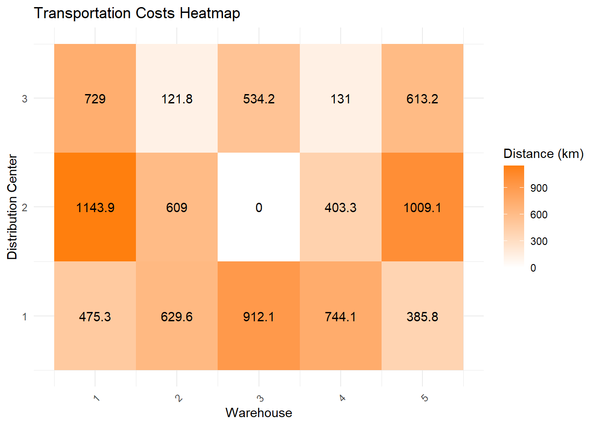
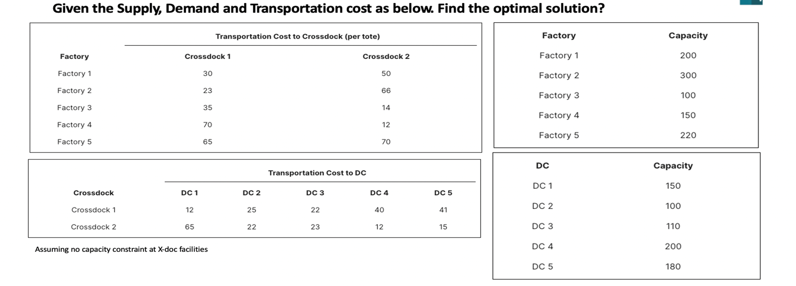
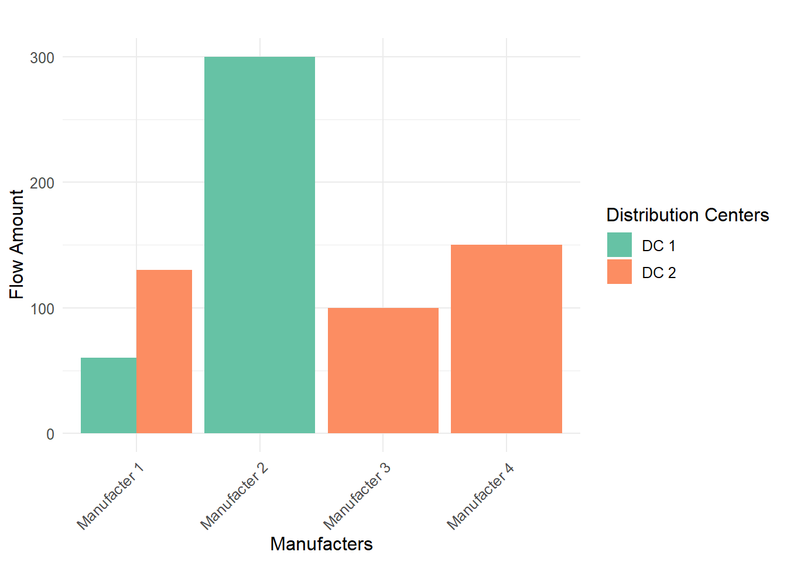

Đây là bài viết của tôi về cách sử dụng R trong ứng dụng Genetic Algorithm trong Supply Chain
1 Giới thiệu:
1.1 Vài điểm về thuật toán Genetic:
GA hay Genetic Algorithm là 1 thuật toán tối ưu hóa ngẫu nhiên (stochastic search algorithms), được phát triển dựa trên lý thuyết tiến hóa và sự chọn lọc tự nhiên của sinh học (Luca Scrucca 2013).
Ở thời cấp 3, bạn đã từng học về lý thuyết tiến hóa và chọn lọc tự nhiên của Charles Darwin và Alfred Russel ở môn Sinh học. Nếu bạn cũng từng liệt Sinh như tôi thì bạn quên cũng không sao 😅😅. Vậy thì để tôi giải thích lại như sau:
Sự tiến hóa là sự thay đổi đặc điểm di truyền của 1 quần thể sinh vật, ví dụ điển hình chính là từ loại vượn đã tiến hóa thành hình dạng con người văn minh như các bạn bây giờ. Vậy quá trình tiến hóa đó diễn ra khi có sự chọn lọc tự nhiên tạo ra các biến dị di truyền (Ví dụ: đột biến,…) và kết quả là các cá thể đột biến trở nên phổ biến hơn hoặc hiếm gặp hơn trong quần thể. Vậy điều kiện để xảy ra sự chọn lọc tự nhiên có thể là sự thay đổi về môi trường sống, địa lý,… dẫn tới sự khác nhau về khả năng sống sót và sinh sản.
Kết cục là xuất hiện các cá thể đột biến “mạnh mẽ hơn” hoặc đúng là “đặc biệt hơn” có khả năng tồn tại khi xuất hiện sự thay đổi lớn, ví dụ như dưới đây, do sự thay đổi về địa điểm sống, từ một loại chim sẻ đã phát triển thành 3 phân họ khác nhau.
Vậy lí thuyết này liên quan gì tới vấn đề tối ưu hóa. Thông thường khi bạn muốn tối ưu hóa một vấn đề gì đó, bạn cần xây dựng mô hình định lượng nó, ví dụ như dưới ảnh này ta đang có mô hình MILP nhằm hoạch định tuyến đường và tối ưu hóa quãng đường di chuyển.
Hình 2: Mô hình VRP
Mục tiêu của hàm chính là tìm ra giá trị nhỏ nhất nghĩa là chi phí cho việc di chuyển của xe là nhỏ nhất. Do đó, bạn có thể hình dung rằng giá trị nhỏ nhất đó như là các cá thể đột biến có khả năng sống sót cao nhất trong quẩn thể.
Vì vậy thuật toán Genetic (GA) chính là lặp đi lặp lại sự chọn lọc tự nhiên trong một quần thể hoặc một mẫu để đến cuối cùng tìm ra cá thể vượt trội nhất.
1.2 Cách hoạt động GA trong ML:
Trong Machine Learning, GA nhằm tìm ra đúng các biến cần thiết để xây dựng mô hình tốt nhất. Gỉa sử chúng ta có 2 mô hình là:
Mô hình 1: gồm các biến A,C,D.
Mô hình 2: gồm biến A,B,E.
Vậy mô hình nào mới là tốt nhất cho mô hình dự đoán ? Chúng ta chưa biết được và chỉ có thể so sánh nó thông qua thuật toán Genetic.
Về quy trình, thuật toán Genetic sẽ có cách hoạt động như dưới đây. Quy trình này mình tham khảo của (Rohith Gandhi 2018).
Bước 1 (Initialisation): mỗi biến được xem là Gene và nhiều Gene gộp lại thành một mô hình hay gọi là Chromosome và nhiều Chromosome sẽ tạo thành một quần thể (Population). Việc này giống như là bạn đang trình bày hết các phương án có thể sử dụng.
Bước 2 (Fitness Function): Bạn cần xây dựng một hàm mục tiêu để tính toán giá trị cho các mô hình ở bước 1.
Bước 3 (Selection): Biến nào có giá trị yếu kém sẽ bị loại và quá trình tính toán sẽ tiếp tục ở thế hệ của nó tiếp theo. Diễn giải đơn giản hơn là chúng ta thử một cách khác và cố gắng cải thiện kết quả.
Bước 4 (Crossover): Tạo ra mô hình gồm các biến tốt đã lựa chọn ở bước 3. Ví dụ như biến A, B là tốt cho mô hình.
Bước 5 (Mutation): Thay đổi mô hình đầu vào đã bao gồm các biến ở bước 4 và bắt đầu lại từ bước 1. Ví dụ mô hình cần chọn gồm 5 biến và ta đã chọn được biến A,B là tốt. Do đó, khi quay lại bước 1, ta chỉ cần chọn thêm 3 biến thay vì 5 biến như thông thường.
2 Thực hành trong R:
Sau khi đã sơ lược về thuật toán, bây giờ ta sẽ vào phần thực hành trong R. Vậy làm sao để ứng dụng thuật toán Genetic trong R, mình đã kham khảo qua nhiều nguồn tài liệu và tổng hợp dưới đây:
Xây dựng hàm mục tiêu: hàm mục tiêu là bước quan trọng nhất trong thuật toán Genetic vì nó là cơ sở để đánh giá và lựa chọn cá thể vượt trội nhất. Và hàm mục tiêu sẽ luôn khác nhau tùy vào vấn đề mà ta đặt ra. Giả sử chúng ta muốn tối ưu chi phí thì nó là hàm Min, còn ta muốn tối đa lợi nhuận thì nó sẽ là hàm Max.
Vậy hàm mục tiêu của bài toán trên trong R, bạn có thể tham khảo phần code bên dưới mình:
Type of fitness function
Đối số type trong hàm có 3 giá trị:
"binary": đại diện cho biến quyết định dạng phân loại, ví dụ: có/không
"real-valued": dùng dể tối ưu cho các biến quyết định là dạng số thực, số tự nhiên.
"permutation": cho các vấn đề liên quan đến việc sắp xếp lại các biến thành danh sách, ví dụ: thang đo Likert.
Chi tiết về hàm ga(), bạn có thể tham khảo tài liệu của (Luca Scrucca 2013).
2.1 Thuật toán Genetic:
Vậy bây giờ chúng ta sẽ xử lí bài toán trên theo thuật toán Genetic
Gỉa sử chúng ta có bài toán về vận chuyển hàng từ nhà kho để thỏa mãn nhu cầu ở các điểm DC (Distribution center). Và công thức để tính toán được chi phí là:
Trong bài toán này, bạn sẽ cần dữ liệu để tính toán 2 thông số là: Phí bốc xếp (Loading cost) và Chi phí vận chuyển (Transportation cost).
Nếu trong công việc thường ngày ở công ty, chúng ta sẽ cần lấy dữ liệu từ Data warehouse bằng SQL hoặc các phần mềm Business Intelligence khác. Ở đây, nhằm mục đích học tập, mình đã tạo ra code ở phía dưới để xây dựng dữ liệu cho các bạn luyện tập.
Code
# Create a data frame for loading costsloading_costs <-data.frame(Warehouse =rep(paste("WH", 1:5), each =4),ID =rep(1:5, times =4),Weight_Category =rep(c("< 2 tons", "2 to 5 tons", "5 to 10 tons", "> 10 tons"), times =5),Has_Machine =rep(c("Yes", "No", "Yes", "No", "No"), each =4),Loading_Cost =c(80, 100, 120, 160, # Warehouse 1 (with machine)110, 150, 180, 210, # Warehouse 2 (without machine)85, 105, 125, 140, # Warehouse 3 (with machine)150, 170, 190, 210, # Warehouse 4 (without machine)140, 165, 185, 215) # Warehouse 5 (without machine))# Set seed for reproducibilityset.seed(123)# Define parametersweight_categories <-c("< 1.5", "1.5 to 2.5", "2.5 to 5", "5 to 10", "> 10")# Create the data frameloading_costs <-data.frame(Warehouse =rep(1:5, each =15), # 5 warehouses, 15 rows eachDC =rep(rep(1:3, each =5), times =5), # Repeat 1, 2, 3 for each warehouseWeight_Category =rep(weight_categories, times =15), # Repeat categories for 15 rowsLoading_Cost =round(runif(75, 5, 150), 2),Has_Machine =sample(c("Yes", "No"), 75, replace =TRUE))# Define warehouses with coordinates (latitude, longitude)warehouses <-data.frame(ID =1:5,Latitude =c(21.0285, 16.0545, 10.7769, 14.0583, 19.8060), # Example latitudes (Hanoi, HCMC, Da Nang, etc.)Longitude =c(105.804, 108.2022, 106.6957, 108.2772, 105.7460) # Example longitudes)# Define distribution centers data in Vietnam (example coordinates)distribution_centers <-data.frame(ID =1:3,Demand =c(90, 30, 150),Latitude =c(17.974855, 11.7769, 15.122327), # Example latitudes (Hanoi, Da Nang, HCMC)Longitude =c(102.630867, 106.6957, 108.799357) # Example longitudes)
Nếu bạn từng gặp khó khăn trong việc phải đối mặt với cả đống dữ liệu từ hệ thống và chưa biết lấy dữ liệu nào để phân tích hoặc gộp bảng nào qua bảng nào thì lời khuyên của mình là hãy vẽ bảng Entity relation diagram (ERD).
ERD là một công cụ trực quan dùng để mô tả cấu trúc dữ liệu trong cơ sở dữ liệu. ERD thể hiện các thực thể (entities), thuộc tính (attributes), và các mối quan hệ (relationships) giữa chúng. Các thực thể thường được biểu diễn dưới dạng hình chữ nhật, thuộc tính dưới dạng hình ellips, và mối quan hệ bằng hình thoi hoặc đường nối. ERD giúp lập kế hoạch cho thiết kế cơ sở dữ liệu, đảm bảo rằng các yếu tố dữ liệu và quan hệ giữa chúng được xác định rõ ràng, tạo nền tảng cho việc phát triển và quản lý dữ liệu hiệu quả.
Như biểu đồ dưới đây, mình đang có 3 bảng gồm:
Bảng thông tin chi tiết về DC.
Bảng thông tin chi tiết về WH.
Bảng giá về loading cost và transportation cost từ WH đến DC.
Và các bạn có thể dễ dàng hình dung các mối quan hệ thông qua bảng Entity relation diagram (ERD) dưới đây:
Biểu đồ 1: EDR model
Tải package datamodelr:
Mình tạo biểu đồ này bằng thư viện datamodelr. Bạn có thể tải bằng cú pháp: devtools::install_github("bergant/datamodelr")
2.1.1 Dữ liệu đầu vào:
Như vậy, dựa vào đó, ta sẽ tính toán được 2 matrix về chi phí:
Bảng giá loading ở các kho. (Hình bên trái)
Bảng chi phí vận chuyển từ từng WH đến các DCs. (Hình bên phải)
Code
## Calculate the transportation cost:# Haversine distance functionhaversine <-function(lat1, lon1, lat2, lon2) { R <-6371# Radius of Earth in kilometers dlat <- (lat2 - lat1) * pi /180 dlon <- (lon2 - lon1) * pi /180 a <-sin(dlat /2) *sin(dlat /2) +cos(lat1 * pi /180) *cos(lat2 * pi /180) *sin(dlon /2) *sin(dlon /2) c <-2*atan2(sqrt(a), sqrt(1- a)) R * c # Distance in kilometers}# Calculate distance matrix based on coordinatesdistance_matrix <-matrix(0, nrow =nrow(warehouses), ncol =nrow(distribution_centers))for (i in1:nrow(warehouses)) {for (j in1:nrow(distribution_centers)) { distance_matrix[i, j] <-haversine( warehouses$Latitude[i], warehouses$Longitude[i], distribution_centers$Latitude[j], distribution_centers$Longitude[j] ) }}# Define the fuel price (example value)fuel_price <-20# Fuel price per kilometer# Calculate transportation coststransportation_costs <- distance_matrix * fuel_price *0.4## Calculate the loading cost:weights_per_good <-0.1mean_loading_cost<-loading_costs %>%group_by(DC, Warehouse) %>%summarise(mean =mean(Loading_Cost,na.rm =TRUE)/1000/weights_per_good) %>%# Assumes weighted of goods is 0.1kg ungroup()library(data.table)# Reshape the data frame to a wide formatmean_cost_matrix <-dcast(mean_loading_cost, Warehouse ~ DC, value.var ="mean")# Convert the data frame to a matrix and remove the Warehouse columnloading_costs_per_dc <-as.matrix(mean_cost_matrix[,-1])# Set row names as the warehouse namesrownames(loading_costs_per_dc) <- mean_loading_cost$Warehouse[!duplicated(mean_loading_cost$Warehouse)]

Biểu đồ 2: Heatmap cho bảng chi phí bốc xếp và bảng giá vận chuyển từ WH đến DC
Loading Costs by weight category in each warehouses
Table just contains expected loading cost
Warehouse
Distribution Center
Weight Category
Loading Cost (VNĐ)
Has Machine
WH 2
DC 2
5 to 10
₫149,170
Yes
WH 3
DC 1
< 1.5
₫144,640
No
WH 1
DC 3
< 1.5
₫143,740
No
WH 2
DC 1
> 10
₫143,400
No
WH 1
DC 1
> 10
₫141,370
No
WH 3
DC 1
1.5 to 2.5
₫135,830
Yes
Source: package gt in R
Biểu đồ 2: Heatmap cho bảng chi phí bốc xếp và bảng giá vận chuyển từ WH đến DC
2.1.2 Xây dựng hàm mục tiêu:
Sau khi đã có đủ dữ liệu, bạn sẽ bắt đầu viết hàm mục tiêu và dùng thuật toán GA để tìm ra giá trị tối ưu nhất.
Trong hàm ga từ gói GA trong R, có một số đối số quan trọng cho phép bạn tùy chỉnh thuật toán di truyền. Dưới đây là một cái nhìn tổng quan về một số đối số quan trọng:
type: Chỉ định loại tối ưu hóa (ví dụ: "real-valued", "binary" hoặc "permutation").
fitness: Hàm đánh giá độ phù hợp; nó nên nhận một vector tham số làm đầu vào và trả về một giá trị số.
lower và upper: Định nghĩa giới hạn cho các biến nếu bạn đang tối ưu hóa trong không gian liên tục (dùng cho các loại giá trị thực).
popSize: Thiết lập kích thước quần thể cho mỗi thế hệ.
maxiter: Chỉ định số thế hệ tối đa để chạy thuật toán.
run: Chỉ định số thế hệ để chạy thuật toán mà không có sự cải thiện trước khi dừng lại.
pmutation: Xác suất xảy ra đột biến trong quần thể.
elitism: Xác định xem các cá thể tốt nhất có nên được giữ lại trong thế hệ tiếp theo hay không.
Những đối số này giúp điều chỉnh thuật toán di truyền cho các nhu cầu tối ưu hóa cụ thể của bạn, cho phép hiệu suất tốt hơn và hội tụ về các giải pháp tối ưu.
Ngoài ra, còn có các lưu ý cho bạn khi sử dụng R như sau:
Lưu ý khi dùng hàm ga():
Hàm ga() phải có ít nhất 2 đối số là type và fitness thì R mới chạy được.
Riêng khi type = “binary” thì cần thêm đối số nBits.
Còn khi type = "real-valued"/"permutation" thì cần thêm đối số min và max.
Code
# Load necessary librarylibrary(GA)demand<-c(distribution_centers$Demand)# Define the objective functionobjective_function <-function(quantities) { quantities_matrix <-matrix(quantities, nrow =5, ncol =3, byrow =TRUE)# Calculate total loading costs loading_costs <-rowSums(quantities_matrix) * loading_costs_per_dc # Total loading costs for each DC# Calculate total transportation costs transportation_costs <-sum(quantities_matrix * transportation_costs)# Combine both costs total_cost <-sum(loading_costs) + transportation_costs# Check if demands are metif (any(colSums(quantities_matrix) < demand)) {return(Inf) # Penalize if demands are not met }return(total_cost)}# Set up the Genetic Algorithmnum_vars <-5*3# 5 warehouses, 3 distribution centersga_result <-ga(type ="real-valued",fitness =function(x) -objective_function(x), # Negate for minimizationlower =rep(0, num_vars), # Minimum quantityupper =rep(100, num_vars), # Maximum quantity (adjust as needed)popSize =50,maxiter =100,run =10,monitor =TRUE)
Code
# Assuming ga_result@solution contains optimal quantitiesga_result_solution <-c(ga_result@solution)# Reshape the solution into a matrix (5 warehouses x 3 DCs)optimal_quantities <-matrix(ga_result@solution,nrow =5, ncol =3, byrow =TRUE)# Convert the matrix to a data frameweights<-optimal_quantities* weights_per_goodrownames(weights) <-1:5colnames(weights) <-1:3library(reshape2)real_weighted <-melt(weights)# Rename the columnscolnames(real_weighted) <-c("Warehouse", "DC", "Total_Weight")# Perform left joinresult <- real_weighted %>%left_join(loading_costs, by =c("Warehouse", "DC"))result <-result %>%mutate(Price =case_when( Total_Weight <1.5~"< 1.5", Total_Weight <2.5~"1.5 to 2.5", Total_Weight <5~"2.5 to 5", Total_Weight <10~"5 to 10", Total_Weight >=10~"> 10",is.na(Total_Weight) ~NA_character_# Handle NA explicitly if needed ))result<-result %>%filter(Weight_Category == Price) %>%select(-Price)# Join with tranportation cost table:rownames(transportation_costs) <-1:5colnames(transportation_costs) <-1:3transport<-melt(transportation_costs)# Rename the columnscolnames(transport) <-c("Warehouse", "DC", "Transport_cost")result<-left_join(result, transport,by=c("Warehouse", "DC"))# Adjust:result<-result %>%mutate(Loading_Cost = Loading_Cost*1000,Transport_cost = Transport_cost*1000,DC =paste("DC",DC),Warehouse =paste("WH",Warehouse)) # Reorder cols in table:result<-result[,c("Warehouse","DC","Has_Machine","Total_Weight","Weight_Category","Loading_Cost","Transport_cost")]
2.1.3 Báo cáo:
Và cuối cùng, sau khi có kết quả, mình sẽ dùng các thư viện gồm: Leaflet, gt, và biểu đồ Sankey phục vụ những mục đích khác nhau cho trực quan hóa dữ liệu.
Leaflet: Đây là một thư viện mạnh mẽ để tạo bản đồ tương tác. Nó cho phép người dùng dễ dàng thêm các lớp, điểm đánh dấu và pop-up, rất lý tưởng để trực quan hóa dữ liệu địa lý. Leaflet đặc biệt hữu ích để hiển thị các dữ liệu như vị trí, lộ trình, hoặc phân bố không gian.
gt: Gói gt được thiết kế để tạo ra các bảng chất lượng cao trong R. Nó cho phép người dùng định dạng và tạo kiểu cho bảng một cách dễ dàng, giúp chúng trở nên hấp dẫn và dễ đọc. gt hỗ trợ các tính năng như định dạng tùy chỉnh, dòng tóm tắt, và thậm chí thêm chú thích, nâng cao cách trình bày dữ liệu trong báo cáo.
Biểu đồ Sankey: Những biểu đồ này được sử dụng để trực quan hóa luồng và mối quan hệ giữa các danh mục khác nhau. Trong R, gói networkD3 hoặc ggalluvial có thể tạo ra biểu đồ Sankey, giúp hiểu cách các giá trị di chuyển giữa các nút, chẳng hạn như theo dõi hành trình người dùng hoặc hiển thị phân bổ tài nguyên.
Để kết nối các biểu đồ lại với nhau, ta thường nghĩ đến Shiny trong R nhưng vì chúng ta đang tạo website bằng Quarto nên output cuối cùng sẽ là một trang web tĩnh - static website. Do đó, nó sẽ không phản hồi với thông tin đầu vào của người dùng hoặc chạy bất kỳ mã R nào. Bạn có thể hình dung giống như bạn đang muốn xem biểu đồ về doanh thu trong tháng tiếp theo trên 1 biểu đồ trong Word - không thể làm được vì nó thuộc dạng văn bản, bạn chỉ đọc hoặc nhìn chứ không tương tác được.
Tuy vậy, sau một thời gian tìm hiểu, mình cũng tìm được cách để nhúng Shiny vào R để hiển thị trên Quarto. Nguồn tài liệu bạn có thể kham khảo ở trang này r-shinylive-demo.
#| viewerHeight: 500
#| standalone: true
#| fig-cap: "Biểu đồ 3: Dashboard về lịch trình vận chuyển hàng dự tính"
# Load required libraries
pacman::p_load(leaflet,
dplyr,
networkD3,
shiny)
# Add value:
# Convert GA solution to a matrix
# Optimal quantities matrix
optimal_quantities <- matrix(c(
43.306058, 10.87137, 13.26283,
15.524054, 30.42748, 48.86716,
7.599769, 44.93531, 27.46289,
18.556927, 17.60396, 41.85203,
16.305016, 13.15498, 21.79634
), nrow = 5, ncol = 3, byrow = TRUE)
# Warehouse data:
warehouses <- data.frame(
ID = 1:5,
Latitude = c(21.0285, 16.0545, 10.7769, 14.0583, 19.8060),
Longitude = c(105.8040, 108.2022, 106.6957, 108.2772, 105.7460),
District = c("Đống Đa", "Hải Châu", "Quận 1", "Mang Yang", "Đông Sơn"),
Province = c("Hà Nội", "Đà Nẵng", "Hồ Chí Minh", "Gia Lai", "Thanh Hóa"),
Address = c(
"2RH3+9HX Đống Đa, Hà Nội, Việt Nam",
"3632+RV4 Hải Châu, Đà Nẵng, Việt Nam",
"QMGW+Q74 Quận 1, Hồ Chí Minh, Việt Nam",
"375G+8VG Mang Yang, Gia Lai, Việt Nam",
"RP4W+99X Đông Sơn, Thanh Hóa, Việt Nam"
)
)
# Distribution center data:
distribution_centers <- data.frame(
ID = 1:3,
Latitude = c(17.97486, 11.77690, 15.12233),
Longitude = c(102.6309, 106.6957, 108.7994),
District = c("Viêng Chăn", "Lộc Ninh", "Quảng Ngãi"),
Province = c("Lào", "Bình Phước", "Quảng Ngãi"),
Address = c(
"XJFJ+W8X Viêng Chăn, Lào",
"QMGW+Q74 Lộc Ninh, Bình Phước, Việt Nam",
"4QCX+WPQ Quảng Ngãi, Việt Nam"
)
)
# Create a data frame with the warehouse data
result <- data.frame(
Warehouse = c("WH 1", "WH 2", "WH 3", "WH 4", "WH 5",
"WH 1", "WH 2", "WH 3", "WH 4", "WH 5",
"WH 1", "WH 2", "WH 3", "WH 4", "WH 5"),
DC = c("DC 1", "DC 1", "DC 1", "DC 1", "DC 1",
"DC 2", "DC 2", "DC 2", "DC 2", "DC 2",
"DC 3", "DC 3", "DC 3", "DC 3", "DC 3"),
Has_Machine = c("Yes", "No", "No", "No", "No",
"No", "No", "No", "No", "No",
"No", "No", "No", "No", "No"),
Total_Weight = c(4.3306058, 1.5524054, 0.7599769, 1.8556927, 1.6305016,
1.0871366, 3.0427479, 4.4935308, 1.7603961, 1.3154977,
1.3262832, 4.8867159, 2.7462887, 4.1852028, 2.1796338),
Weight_Category = c("2.5 to 5", "1.5 to 2.5", "< 1.5", "1.5 to 2.5", "1.5 to 2.5",
"< 1.5", "2.5 to 5", "2.5 to 5", "1.5 to 2.5", "< 1.5",
"< 1.5", "2.5 to 5", "2.5 to 5", "2.5 to 5", "1.5 to 2.5"),
Loading_Cost = c(64300, 40680, 144640, 38790, 18750,
11610, 97870, 36380, 69120, 70030,
143740, 91150, 64990, 114230, 96240),
Transport_cost = c(3802097.2, 5037171.3, 7297102.2, 5952559.7, 3086494.5,
8264855.3, 4021256.9, 889559.4, 2449208.3, 7188382.3,
5831987.6, 974375.3, 4273915.6, 1047828.2, 4905804.6)
)
# Custom icon:
warehouse_icon <- makeIcon(
iconUrl = "https://raw.githubusercontent.com/Loccx78vn/Genetic-Algorithm/refs/heads/main/warehouse_icon.png", # Update with your actual file path
iconWidth = 30,
iconHeight = 30
)
dc_icon <- makeIcon(
iconUrl = "https://raw.githubusercontent.com/Loccx78vn/Genetic-Algorithm/refs/heads/main/distribution_center.png", # Update with your actual file path
iconWidth = 30,
iconHeight = 30
)
# Define UI
ui <- fluidPage(
titlePanel("Warehouse Distribution Dashboard"),
sidebarLayout(
sidebarPanel(
helpText("Select one or more warehouses to view distribution data."),
checkboxGroupInput(inputId = "warehouse",
label = "Select Warehouse:",
choices = paste("Warehouse", 1:5),
selected = paste("Warehouse", 1))
),
mainPanel(
tabsetPanel(
tabPanel("Map",
leafletOutput("map", height = "400px")),
tabPanel("Data Table",
fluidRow(
column(12, div(style = "height: 400px;", dataTableOutput("cost_table")))
)),
tabPanel("Sankey Chart",
fluidRow(
column(12, div(style = "height: 400px;", uiOutput("sankey_ui")))
))
)
)
)
)
# Define server logic
server <- function(input, output, session) {
location <- reactive({
req(input$warehouse)
as.numeric(sub("Warehouse ", "", input$warehouse))
})
# Create the leaflet map
output$map <- renderLeaflet({
req(location())
# Initialize the map
map <- leaflet() %>%
addTiles() %>%
addProviderTiles(providers$CartoDB.Positron) %>%
addMarkers(data = warehouses %>% filter(ID %in% location()),
lat = ~Latitude,
lng = ~Longitude,
label = ~paste0("<strong> ID Warehouse: </strong> ", ID, "<br/> ",
"<strong> Province: </strong> ", Province, "<br/> ",
"<strong> District: </strong> ", District, "<br/> ",
"<strong> Address: </strong> ", Address, "<br/> ") %>%
lapply(htmltools::HTML),
icon = warehouse_icon) %>%
addMarkers(data = distribution_centers,
lat = ~Latitude,
lng = ~Longitude,
label = ~paste0("<strong> ID Distribution Center: </strong> ", ID, "<br/> ",
"<strong> Province: </strong> ", Province, "<br/> ",
"<strong> District: </strong> ", District, "<br/> ",
"<strong> Address: </strong> ", Address, "<br/> ") %>%
lapply(htmltools::HTML),
icon = dc_icon)
qty_data <- optimal_quantities[location(), , drop = FALSE]
# Add routes based on the optimal quantities
for (i in 1:nrow(qty_data)) {
for (j in 1:ncol(qty_data)) {
if (qty_data[i, j] > 0) {
route_start <- warehouses[warehouses$ID == i, c("Longitude", "Latitude")]
route_end <- distribution_centers[distribution_centers$ID == j, c("Longitude", "Latitude")]
map <- map %>%
addPolylines(lat = c(route_start$Latitude, route_end$Latitude),
lng = c(route_start$Longitude, route_end$Longitude),
color = "black", weight = 2, opacity = 0.5)
}
}
}
map # Return the modified map
})
# Render the cost table
output$cost_table <- renderDataTable({
req(location())
gt <- result %>%
filter(Warehouse %in% paste("WH", location())) %>%
select(c(Warehouse,
DC,
Loading_Cost,
Transport_cost))
gt
})
# Render the Sankey diagram
output$sankey_ui <- renderUI({
req(location())
qty_data <- optimal_quantities[location(), , drop = FALSE]
req(nrow(qty_data) > 0) # Ensure there is data to display
# Create links data frame
links <- data.frame(
source = rep(0:(nrow(qty_data) - 1), each = ncol(qty_data)),
target = as.vector(sapply(0:(ncol(qty_data) - 1),
function(j) rep(nrow(qty_data) + j, nrow(qty_data)))),
value = as.vector(qty_data)
)
# Filter for selected warehouses
links <- links %>% filter(source %in% (location() - 1))
# Create nodes data frame
nodes <- data.frame(name = c(paste("Warehouse", location()), paste("DC", 1:ncol(qty_data))))
# Create the Sankey network
sankey <- sankeyNetwork(Links = links,
Nodes = nodes,
Source = "source",
Target = "target",
Value = "value",
NodeID = "name",
height = 500,
width = 400,
fontSize = 12,
nodeWidth = 20,
sinksRight = FALSE) # Change this value to make it thinner
# Customize tooltips and add click functionality to show a value panel
sankey <- htmlwidgets::onRender(sankey, "
function(el, x) {
// Create a div for the value panel
var valuePanel = d3.select('body').append('div')
.attr('class', 'value-panel')
.style('position', 'absolute')
.style('padding', '8px')
.style('background', 'lightgray')
.style('border', '1px solid gray')
.style('border-radius', '4px')
.style('opacity', 0); // Start hidden
// Append title for tooltips on hover
d3.selectAll('.link')
.append('title')
.text(function(d) { return d.value; }); // Show value on hover
// Add click event to show the value panel
d3.selectAll('.link')
.on('click', function(event, d) {
// Ensure we get the correct value
var value = d3.select(this).datum().value;
// Position the value panel near the mouse cursor
valuePanel
.style('left', (event.pageX + 5) + 'px')
.style('top', (event.pageY + 5) + 'px')
.style('opacity', 1) // Make it visible
.html('Value: ' + value); // Set the text to the link value
// Hide the panel after a delay
setTimeout(function() {
valuePanel.style('opacity', 0);
}, 2000); // Change the delay as needed
});
}
")
## Add title and caption:
sankey <- htmlwidgets::appendContent(sankey, htmltools::tags$p(style = "font-size: 12px; text-align: right;", " A wider arrow indicates that a larger quantity is being sent from that warehouse to a distribution center."))
sankey # Output the Sankey diagram
})
}
# Run the application
shinyApp(ui = ui, server = server)
Bạn có thể thấy với dashboard như vậy, ta có thể xem được nhiều thông tin hơn như:
Vị trí cụ thể của từng WH và DC cũng như là các tuyến đường dự kiến bằng các đường thẳng minh họa. (Xem Map tab)
Thông tin về chi phí Loading cost và Transporation cost cũng như lượng hàng cần vận chuyển cho từng nhà kho. (Xem Table and Sankey tab)
Bạn có thể xem cho 1 hoặc nhiều nhà kho bằng cách click trên thanh Filter. Ngoài ra, đặc biệt với Sankey chart, bạn cần giữ hoặc click chuột vào tuyến để xem được số lượng hàng.
Tuy rất thích R nhưng mình vẫn không thích xây dựng dashboard bằng R lắm vì quá nặng về code và không hiệu quả về thời gian, nguồn lực. Các tools khác mình ưu tiên hơn như Power BI, Tableau hoặc các BIs mà công ty bạn sử dụng trong công việc hằng ngày.
2.2 Mô hình MILP:
Tiếp theo ta sẽ chuyển sang thuật toán tuyến tính mới là mô hình MILP.
2.2.1 Giới thiệu sơ lược:
MILP (Mixed Integer Linear Programming) là một phương pháp tối ưu hóa được sử dụng trong các bài toán lập kế hoạch, phân bổ tài nguyên, và quyết định trong các lĩnh vực như logistics, sản xuất, tài chính, và nhiều lĩnh vực khác. MILP là một phần mở rộng của lập trình tuyến tính (Linear Programming - LP), trong đó có các biến là số nguyên (integer variables) bên cạnh các biến liên tục (continuous variables).
Trong đó, cấu trúc của một bài toán MILP bao gồm:
Hàm mục tiêu: Là một hàm tuyến tính mà bạn muốn tối ưu hóa (tối đa hóa hoặc tối thiểu hóa).
\[
\text{Maximize or Minimize } Z = c_1x_1 + c_2x_2 + \ldots + c_nx_n
\]
Ràng buộc: Bao gồm các điều kiện tuyến tính mà các biến phải thỏa mãn.
Biến quyết định: Các biến trong bài toán có thể là:
Biến liên tục: Có thể nhận mọi giá trị thực (ví dụ: số lượng sản phẩm).
Biến nguyên: Chỉ nhận giá trị nguyên (ví dụ: số lượng xe tải).
Biến nhị phân: Chỉ nhận giá trị 0 hoặc 1 (ví dụ: có hoặc không sử dụng một nhà máy).
Mô hình MILP là một công cụ mạnh mẽ cho việc tối ưu hóa trong nhiều lĩnh vực khác nhau. Với khả năng kết hợp giữa các biến liên tục và số nguyên, MILP có thể giải quyết nhiều bài toán phức tạp mà các phương pháp tối ưu hóa khác không thể thực hiện hiệu quả. Các ứng dụng phổ biến bao gồm:
Quản lý chuỗi cung ứng: Tối ưu hóa việc phân phối hàng hóa từ các kho đến các khách hàng.
Lập kế hoạch sản xuất: Xác định số lượng sản phẩm cần sản xuất để tối đa hóa lợi nhuận hoặc giảm chi phí.
Tối ưu hóa lịch trình: Lập lịch cho nhân viên, máy móc, hoặc tài nguyên để tối ưu hóa hiệu suất.
Quy hoạch đô thị: Tối ưu hóa việc sử dụng đất và tài nguyên trong quy hoạch thành phố.
Trong R có các thư viện như lpSolve, ompr, và ROI có thể được sử dụng để giải quyết các bài toán MILP.
2.2.2 Ví dụ về mô hình MILP:
Gỉa sử ta có bài toán về vấn đề Transshipment có yêu cầu là tìm ra phương án vận tải tối ưu nhất để vận chuyển hàng hóa từ nhà máy (Factory) thông qua Crossdocking và đến được Distribution Center với mục tiêu là đạt chi phí thấp nhất.

Hình 5: Vấn đề Transshipment
Vì bài toán này thuộc dạng tuyến tính, phương pháp MILP sẽ làm tốt hơn nhiều so với thuật toán GA bên trên.
Code
library(ompr)library(ompr.roi)library(ROI.plugin.glpk)#Input:Supply <-c(200,300,100,150,220)Demand <-c(150,100,110,200,180)DC<-2m<-length(Supply)n<-length(Demand)Cost_CD<-read.table(text ="CD1 CD2 30 50 23 66 35 14 70 12 65 70",header = T)Cost_DC<-read.table(text ="DC1 DC2 DC3 DC4 DC5 12 25 22 40 41 65 22 23 12 15",header = T)#MILP model from the model5 <-MIPModel() %>%# Add variableadd_variable(x[i, j], i =1:m, j =1:DC) %>%add_variable(y[j, k], j =1:DC, k =1:n) %>%# minimize the cost of transshipment:set_objective(sum_expr(x[i, j]*Cost_CD[i, j],i =1:m, j =1:DC)+sum_expr(y[j, k]*Cost_DC[j, k], k =1:n, j =1:DC),"min") %>%add_constraint(sum_expr(y[j, k], j =1:DC) >= Demand[k], k =1:n) %>%# The amount of inventory in Crossdocking is smaller than production goodsadd_constraint(sum_expr(x[i, j], j =1:DC) <= Supply[i], i =1:m) %>%# The amount of is bigger than demand in DCadd_constraint(sum_expr(x[i, j], i =1:m) -sum_expr(y[j, k], k =1:n) >=0,j =1:DC) %>%add_constraint(x[i, j] >=0, j =1:DC, i =1:m)%>%add_constraint(y[j, k] >=0, j =1:DC, k =1:n)%>%#Solve the model:solve_model(with_ROI(solver ="glpk", verbose =TRUE))
Transshipment flows from Manufacturers to Distribution Centers
Manufacturer
Distribution Center
Flow Amount
Manufacturer 1
DC 1
60.00
Manufacturer 2
DC 1
300.00
Manufacturer 1
DC 2
130.00
Manufacturer 3
DC 2
100.00
Manufacturer 4
DC 2
150.00

Như vậy, chúng ta đã được học về thuật toán Genetic và mô hình MILP cũng như cách thực hiện trong Rstudio.
Nếu bạn có câu hỏi hay thắc mắc nào, đừng ngần ngại liên hệ với mình qua Gmail. Bên cạnh đó, nếu bạn muốn xem lại các bài viết trước đây của mình, hãy nhấn vào hai nút dưới đây để truy cập trang Rpubs hoặc mã nguồn trên Github. Rất vui được đồng hành cùng bạn, hẹn gặp lại! 😄😄😄
---title: "Genetic Algorithms in R"subtitle: "Việt Nam, 2024"categories: ["SupplyChainManagement", "Logistics","Genetic Algorithm"]description: "Đây là bài viết của tôi về cách sử dụng R trong ứng dụng Genetic Algorithm trong Supply Chain"number-sections: trueformat: html: code-fold: true code-tools: truefilters:- shinylivebibliography: references.bib---# Giới thiệu:```{r}#| warning: false#| message: false#| echo: false#Call packagespacman::p_load(rio, here, janitor, tidyverse, dplyr, magrittr, ggplot2, purrr, lubridate, mice, plotly)```## Vài điểm về thuật toán Genetic:**GA** hay **Genetic Algorithm** là 1 thuật toán tối ưu hóa ngẫu nhiên (**stochastic search algorithms**), được phát triển dựa trên lý thuyết tiến hóa và sự chọn lọc tự nhiên của sinh học [@lucascrucca2013].Ở thời cấp 3, bạn đã từng học về lý thuyết tiến hóa và chọn lọc tự nhiên của [Charles Darwin](https://vi.wikipedia.org/wiki/Charles_Darwin) và [Alfred Russel](https://vi.wikipedia.org/wiki/Alfred_Russel_Wallace) ở môn Sinh học. Nếu bạn cũng từng liệt Sinh như tôi thì bạn quên cũng không sao 😅😅. Vậy thì để tôi giải thích lại như sau:Sự tiến hóa là sự thay đổi đặc điểm di truyền của 1 quần thể sinh vật, ví dụ điển hình chính là từ loại vượn đã tiến hóa thành hình dạng con người văn minh như các bạn bây giờ. Vậy quá trình tiến hóa đó diễn ra khi có sự chọn lọc tự nhiên tạo ra các biến dị di truyền (Ví dụ: đột biến,...) và kết quả là các cá thể đột biến trở nên phổ biến hơn hoặc hiếm gặp hơn trong quần thể. Vậy điều kiện để xảy ra sự chọn lọc tự nhiên có thể là sự thay đổi về môi trường sống, địa lý,... dẫn tới sự khác nhau về khả năng sống sót và sinh sản.Kết cục là xuất hiện các cá thể đột biến "mạnh mẽ hơn" hoặc đúng là "đặc biệt hơn" có khả năng tồn tại khi xuất hiện sự thay đổi lớn, ví dụ như dưới đây, do sự thay đổi về địa điểm sống, từ một loại chim sẻ đã phát triển thành 3 phân họ khác nhau.[{fig-align="center"}](https://www.biologyonline.com/dictionary/natural-selection)Vậy lí thuyết này liên quan gì tới vấn đề tối ưu hóa. Thông thường khi bạn muốn tối ưu hóa một vấn đề gì đó, bạn cần xây dựng mô hình định lượng nó, ví dụ như dưới ảnh này ta đang có mô hình [MILP](https://www.mathworks.com/help/optim/ug/mixed-integer-linear-programming-algorithms.html) nhằm hoạch định tuyến đường và tối ưu hóa quãng đường di chuyển.[{fig-align="center"}](https://medium.com/@rihot_gusron/capacitated-vehicle-routing-problem-with-lingo-427c2d3bf724)Mục tiêu của hàm chính là tìm ra giá trị nhỏ nhất nghĩa là chi phí cho việc di chuyển của xe là nhỏ nhất. Do đó, bạn có thể hình dung rằng **giá trị nhỏ nhất** đó như là các **cá thể đột biến** có khả năng sống sót cao nhất trong quẩn thể.Vì vậy thuật toán **Genetic** (GA) chính là lặp đi lặp lại sự chọn lọc tự nhiên trong một quần thể hoặc một mẫu để đến cuối cùng tìm ra cá thể vượt trội nhất.## Cách hoạt động GA trong ML:Trong Machine Learning, GA nhằm tìm ra đúng các biến cần thiết để xây dựng mô hình tốt nhất. Gỉa sử chúng ta có 2 mô hình là:- Mô hình 1: gồm các biến A,C,D.- Mô hình 2: gồm biến A,B,E.Vậy mô hình nào mới là tốt nhất cho mô hình dự đoán ? Chúng ta chưa biết được và chỉ có thể so sánh nó thông qua thuật toán Genetic.Về quy trình, thuật toán Genetic sẽ có cách hoạt động như dưới đây. Quy trình này mình tham khảo của [@rohithgandhi2018].[{fig-align="center"}](https://medium.datadriveninvestor.com/genetic-algorithms-9f920939f7cc)Diễn giải cách hoạt động:- Bước 1 (**Initialisation**): mỗi biến được xem là *Gene* và nhiều *Gene* gộp lại thành một mô hình hay gọi là *Chromosome* và nhiều *Chromosome* sẽ tạo thành một quần thể (*Population*). Việc này giống như là bạn đang trình bày hết các phương án có thể sử dụng.[{fig-align="center"}](https://www.doc.ic.ac.uk/research/technicalreports/2003/DTR03-4.pdf)- Bước 2 (**Fitness Function**): Bạn cần xây dựng một hàm mục tiêu để tính toán giá trị cho các mô hình ở bước 1.- Bước 3 (**Selection**): Biến nào có giá trị yếu kém sẽ bị loại và quá trình tính toán sẽ tiếp tục ở thế hệ của nó tiếp theo. Diễn giải đơn giản hơn là chúng ta thử một cách khác và cố gắng cải thiện kết quả.- Bước 4 (**Crossover**): Tạo ra mô hình gồm các biến tốt đã lựa chọn ở bước 3. Ví dụ như biến A, B là tốt cho mô hình.- Bước 5 (**Mutation**): Thay đổi mô hình đầu vào đã bao gồm các biến ở bước 4 và bắt đầu lại từ bước 1. Ví dụ mô hình cần chọn gồm 5 biến và ta đã chọn được biến A,B là tốt. Do đó, khi quay lại bước 1, ta chỉ cần chọn thêm 3 biến thay vì 5 biến như thông thường.# Thực hành trong R:Sau khi đã sơ lược về thuật toán, bây giờ ta sẽ vào phần thực hành trong R. Vậy làm sao để ứng dụng thuật toán Genetic trong R, mình đã kham khảo qua nhiều nguồn tài liệu và tổng hợp dưới đây:**Xây dựng hàm mục tiêu**: hàm mục tiêu là bước quan trọng nhất trong thuật toán Genetic vì nó là cơ sở để đánh giá và lựa chọn cá thể vượt trội nhất. Và hàm mục tiêu sẽ luôn khác nhau tùy vào vấn đề mà ta đặt ra. Giả sử chúng ta muốn tối ưu chi phí thì nó là hàm Min, còn ta muốn tối đa lợi nhuận thì nó sẽ là hàm Max.Vậy hàm mục tiêu của bài toán trên trong R, bạn có thể tham khảo phần code bên dưới mình:::: callout-important### Type of fitness functionĐối số `type` trong hàm có 3 giá trị:- `"binary"`: đại diện cho biến quyết định dạng phân loại, ví dụ: có/không- `"real-valued"`: dùng dể tối ưu cho các biến quyết định là dạng số thực, số tự nhiên.- `"permutation"`: cho các vấn đề liên quan đến việc sắp xếp lại các biến thành danh sách, ví dụ: thang đo Likert.:::Chi tiết về hàm `ga()`, bạn có thể tham khảo tài liệu của [@lucascrucca2013].## Thuật toán Genetic:Vậy bây giờ chúng ta sẽ xử lí bài toán trên theo thuật toán **Genetic**Gỉa sử chúng ta có bài toán về vận chuyển hàng từ nhà kho để thỏa mãn nhu cầu ở các điểm **DC (Distribution center)**. Và công thức để tính toán được chi phí là:Hàm chi phí tổng thể được xác định như sau:$$TC = \sum_{i=1}^{m} \left( D_{ij} \times \frac{P}{F} \times 0.4 + LC_i \right) \times Q_j$$Trong bài toán này, bạn sẽ cần dữ liệu để tính toán 2 thông số là: **Phí bốc xếp (Loading cost)** và **Chi phí vận chuyển (Transportation cost)**.Nếu trong công việc thường ngày ở công ty, chúng ta sẽ cần lấy dữ liệu từ **Data warehouse** bằng SQL hoặc các phần mềm **Business Intelligence** khác. Ở đây, nhằm mục đích học tập, mình đã tạo ra code ở phía dưới để xây dựng dữ liệu cho các bạn luyện tập.```{r}# Create a data frame for loading costsloading_costs <-data.frame(Warehouse =rep(paste("WH", 1:5), each =4),ID =rep(1:5, times =4),Weight_Category =rep(c("< 2 tons", "2 to 5 tons", "5 to 10 tons", "> 10 tons"), times =5),Has_Machine =rep(c("Yes", "No", "Yes", "No", "No"), each =4),Loading_Cost =c(80, 100, 120, 160, # Warehouse 1 (with machine)110, 150, 180, 210, # Warehouse 2 (without machine)85, 105, 125, 140, # Warehouse 3 (with machine)150, 170, 190, 210, # Warehouse 4 (without machine)140, 165, 185, 215) # Warehouse 5 (without machine))# Set seed for reproducibilityset.seed(123)# Define parametersweight_categories <-c("< 1.5", "1.5 to 2.5", "2.5 to 5", "5 to 10", "> 10")# Create the data frameloading_costs <-data.frame(Warehouse =rep(1:5, each =15), # 5 warehouses, 15 rows eachDC =rep(rep(1:3, each =5), times =5), # Repeat 1, 2, 3 for each warehouseWeight_Category =rep(weight_categories, times =15), # Repeat categories for 15 rowsLoading_Cost =round(runif(75, 5, 150), 2),Has_Machine =sample(c("Yes", "No"), 75, replace =TRUE))# Define warehouses with coordinates (latitude, longitude)warehouses <-data.frame(ID =1:5,Latitude =c(21.0285, 16.0545, 10.7769, 14.0583, 19.8060), # Example latitudes (Hanoi, HCMC, Da Nang, etc.)Longitude =c(105.804, 108.2022, 106.6957, 108.2772, 105.7460) # Example longitudes)# Define distribution centers data in Vietnam (example coordinates)distribution_centers <-data.frame(ID =1:3,Demand =c(90, 30, 150),Latitude =c(17.974855, 11.7769, 15.122327), # Example latitudes (Hanoi, Da Nang, HCMC)Longitude =c(102.630867, 106.6957, 108.799357) # Example longitudes)```Nếu bạn từng gặp khó khăn trong việc phải đối mặt với cả đống dữ liệu từ hệ thống và chưa biết lấy dữ liệu nào để phân tích hoặc gộp bảng nào qua bảng nào thì lời khuyên của mình là hãy vẽ bảng **Entity relation diagram (ERD)**.**ERD** là một công cụ trực quan dùng để mô tả cấu trúc dữ liệu trong cơ sở dữ liệu. ERD thể hiện các thực thể (*entities*), thuộc tính (*attributes*), và các mối quan hệ (*relationships*) giữa chúng. Các thực thể thường được biểu diễn dưới dạng hình chữ nhật, thuộc tính dưới dạng hình ellips, và mối quan hệ bằng hình thoi hoặc đường nối. ERD giúp lập kế hoạch cho thiết kế cơ sở dữ liệu, đảm bảo rằng các yếu tố dữ liệu và quan hệ giữa chúng được xác định rõ ràng, tạo nền tảng cho việc phát triển và quản lý dữ liệu hiệu quả.Như biểu đồ dưới đây, mình đang có 3 bảng gồm:- Bảng thông tin chi tiết về DC.- Bảng thông tin chi tiết về WH.- Bảng giá về loading cost và transportation cost từ WH đến DC.Và các bạn có thể dễ dàng hình dung các mối quan hệ thông qua bảng **Entity relation diagram (ERD)** dưới đây:```{r}#| echo: false#| fig-subcap: "Biểu đồ 1: EDR model"library(datamodelr)# Create the data model from your data framesdm1 <-dm_from_data_frames(list(Warehouses = warehouses,Loading_Costs = loading_costs,Distribution_Centers = distribution_centers)) %>%dm_set_key("Warehouses", "ID") %>%dm_set_key("Loading_Costs", c("Warehouse", "DC")) %>%dm_set_key("Distribution_Centers", "ID") %>%dm_add_references( Loading_Costs$Warehouse == Warehouses$ID, # Correct reference Loading_Costs$DC == Distribution_Centers$ID # Assuming this is the correct reference )# Create and render the ERDdm_create_graph(dm1, rankdir ="LR", columnArrows =TRUE) %>%dm_render_graph()```::: callout-tip### Tải package datamodelr:Mình tạo biểu đồ này bằng thư viện `datamodelr`. Bạn có thể tải bằng cú pháp: `devtools::install_github("bergant/datamodelr")`:::### Dữ liệu đầu vào:Như vậy, dựa vào đó, ta sẽ tính toán được 2 *matrix* về chi phí:- Bảng giá loading ở các kho. (Hình bên trái)- Bảng chi phí vận chuyển từ từng WH đến các DCs. (Hình bên phải)```{r}#| warning: false#| message: false## Calculate the transportation cost:# Haversine distance functionhaversine <-function(lat1, lon1, lat2, lon2) { R <-6371# Radius of Earth in kilometers dlat <- (lat2 - lat1) * pi /180 dlon <- (lon2 - lon1) * pi /180 a <-sin(dlat /2) *sin(dlat /2) +cos(lat1 * pi /180) *cos(lat2 * pi /180) *sin(dlon /2) *sin(dlon /2) c <-2*atan2(sqrt(a), sqrt(1- a)) R * c # Distance in kilometers}# Calculate distance matrix based on coordinatesdistance_matrix <-matrix(0, nrow =nrow(warehouses), ncol =nrow(distribution_centers))for (i in1:nrow(warehouses)) {for (j in1:nrow(distribution_centers)) { distance_matrix[i, j] <-haversine( warehouses$Latitude[i], warehouses$Longitude[i], distribution_centers$Latitude[j], distribution_centers$Longitude[j] ) }}# Define the fuel price (example value)fuel_price <-20# Fuel price per kilometer# Calculate transportation coststransportation_costs <- distance_matrix * fuel_price *0.4## Calculate the loading cost:weights_per_good <-0.1mean_loading_cost<-loading_costs %>%group_by(DC, Warehouse) %>%summarise(mean =mean(Loading_Cost,na.rm =TRUE)/1000/weights_per_good) %>%# Assumes weighted of goods is 0.1kg ungroup()library(data.table)# Reshape the data frame to a wide formatmean_cost_matrix <-dcast(mean_loading_cost, Warehouse ~ DC, value.var ="mean")# Convert the data frame to a matrix and remove the Warehouse columnloading_costs_per_dc <-as.matrix(mean_cost_matrix[,-1])# Set row names as the warehouse namesrownames(loading_costs_per_dc) <- mean_loading_cost$Warehouse[!duplicated(mean_loading_cost$Warehouse)]``````{r}#| warning: false#| message: false#| echo: false#| layout-nrow: 2#| fig-cap: "Biểu đồ 2: Heatmap cho bảng chi phí bốc xếp và bảng giá vận chuyển từ WH đến DC"library(ggplot2)library(reshape2)# Convert the distance matrix to a data framedistance_df <-melt(transportation_costs)colnames(distance_df) <-c("Warehouse", "Distribution_Center", "Transportation Cost (VNĐ)")# Plot the distance matrix with updated colorsggplot(distance_df, aes(x = Distribution_Center,y = Warehouse, fill =`Transportation Cost (VNĐ)`)) +geom_tile() +geom_text(aes(label =round(`Transportation Cost (VNĐ)`, 1)), color ="black") +# Add numbersscale_fill_gradient(high ="#ff7f0e", low ="white") +# Custom colorstheme_minimal() +labs(title ="Transportation Costs Heatmap",x ="Warehouse",y ="Distribution Center") +theme(axis.text.x =element_text(angle =45, hjust =1))# Convert the transportation costs matrix to a data framelibrary(gt)library(gtExtras)# Create a gt tablem<-loading_costs %>%mutate(Loading_Cost = Loading_Cost *1000,DC =paste("DC",DC),Warehouse =paste("WH",Warehouse)) # Convert to currencyhead(m[order(-m$Loading_Cost),]) %>%gt() %>%fmt_currency(columns = Loading_Cost,currency ="VND",decimals =0,use_seps =TRUE ) %>%tab_header(title =md("**Loading Costs by weight category in each warehouses**"),subtitle =md("Table just contains **expected loading cost**") ) %>%opt_align_table_header(align ="center") %>%cols_label(Loading_Cost ="Loading Cost (VNĐ)",Weight_Category ="Weight Category",Has_Machine ="Has Machine",DC ="Distribution Center" ) %>%data_color(method ="numeric",palette ="viridis",reverse =TRUE) %>%gt_theme_pff() %>%tab_style(style =list(cell_text(align ="center")),locations =cells_body(columns =everything())) %>%tab_style(style =list(cell_text(align ="center") ),locations =list(cells_column_labels(everything()) ) ) %>%tab_source_note(source =md("*Source: package gt in R*")) %>%tab_style(style ="font-weight: bold",locations =cells_body(Weight_Category) )```### Xây dựng hàm mục tiêu:Sau khi đã có đủ dữ liệu, bạn sẽ bắt đầu viết hàm mục tiêu và dùng thuật toán GA để tìm ra giá trị tối ưu nhất.Trong hàm `ga` từ gói **GA** trong R, có một số đối số quan trọng cho phép bạn tùy chỉnh thuật toán di truyền. Dưới đây là một cái nhìn tổng quan về một số đối số quan trọng:- **type**: Chỉ định loại tối ưu hóa (ví dụ: `"real-valued"`, `"binary"` hoặc `"permutation"`).- **fitness**: Hàm đánh giá độ phù hợp; nó nên nhận một vector tham số làm đầu vào và trả về một giá trị số.- **lower** và **upper**: Định nghĩa giới hạn cho các biến nếu bạn đang tối ưu hóa trong không gian liên tục (dùng cho các loại giá trị thực).- **popSize**: Thiết lập kích thước quần thể cho mỗi thế hệ.- **maxiter**: Chỉ định số thế hệ tối đa để chạy thuật toán.- **run**: Chỉ định số thế hệ để chạy thuật toán mà không có sự cải thiện trước khi dừng lại.- **pmutation**: Xác suất xảy ra đột biến trong quần thể.- **elitism**: Xác định xem các cá thể tốt nhất có nên được giữ lại trong thế hệ tiếp theo hay không.Những đối số này giúp điều chỉnh thuật toán di truyền cho các nhu cầu tối ưu hóa cụ thể của bạn, cho phép hiệu suất tốt hơn và hội tụ về các giải pháp tối ưu.Ngoài ra, còn có các lưu ý cho bạn khi sử dụng R như sau:::: callout-caution### Lưu ý khi dùng hàm ga():Hàm `ga()` phải có ít nhất 2 đối số là `type` và `fitness thì R mới chạy được.`- Riêng khi type = "binary" thì cần thêm đối số `nBits.`- Còn khi `type = "real-valued"/"permutation"` thì cần thêm đối số `min` và `max`.:::```{r}#| message: false#| warning: false#| output: false# Load necessary librarylibrary(GA)demand<-c(distribution_centers$Demand)# Define the objective functionobjective_function <-function(quantities) { quantities_matrix <-matrix(quantities, nrow =5, ncol =3, byrow =TRUE)# Calculate total loading costs loading_costs <-rowSums(quantities_matrix) * loading_costs_per_dc # Total loading costs for each DC# Calculate total transportation costs transportation_costs <-sum(quantities_matrix * transportation_costs)# Combine both costs total_cost <-sum(loading_costs) + transportation_costs# Check if demands are metif (any(colSums(quantities_matrix) < demand)) {return(Inf) # Penalize if demands are not met }return(total_cost)}# Set up the Genetic Algorithmnum_vars <-5*3# 5 warehouses, 3 distribution centersga_result <-ga(type ="real-valued",fitness =function(x) -objective_function(x), # Negate for minimizationlower =rep(0, num_vars), # Minimum quantityupper =rep(100, num_vars), # Maximum quantity (adjust as needed)popSize =50,maxiter =100,run =10,monitor =TRUE)``````{r}#| echo: false#| warning: false#| message: falselibrary(leaflet)## Update flag of countries in each locations:library(readxl)write <-read_excel("write.xlsx")warehouses<-write[1:5,]distribution_centers<-write[6:8,]``````{r}#| warning: false#| message: false# Assuming ga_result@solution contains optimal quantitiesga_result_solution <-c(ga_result@solution)# Reshape the solution into a matrix (5 warehouses x 3 DCs)optimal_quantities <-matrix(ga_result@solution,nrow =5, ncol =3, byrow =TRUE)# Convert the matrix to a data frameweights<-optimal_quantities* weights_per_goodrownames(weights) <-1:5colnames(weights) <-1:3library(reshape2)real_weighted <-melt(weights)# Rename the columnscolnames(real_weighted) <-c("Warehouse", "DC", "Total_Weight")# Perform left joinresult <- real_weighted %>%left_join(loading_costs, by =c("Warehouse", "DC"))result <-result %>%mutate(Price =case_when( Total_Weight <1.5~"< 1.5", Total_Weight <2.5~"1.5 to 2.5", Total_Weight <5~"2.5 to 5", Total_Weight <10~"5 to 10", Total_Weight >=10~"> 10",is.na(Total_Weight) ~NA_character_# Handle NA explicitly if needed ))result<-result %>%filter(Weight_Category == Price) %>%select(-Price)# Join with tranportation cost table:rownames(transportation_costs) <-1:5colnames(transportation_costs) <-1:3transport<-melt(transportation_costs)# Rename the columnscolnames(transport) <-c("Warehouse", "DC", "Transport_cost")result<-left_join(result, transport,by=c("Warehouse", "DC"))# Adjust:result<-result %>%mutate(Loading_Cost = Loading_Cost*1000,Transport_cost = Transport_cost*1000,DC =paste("DC",DC),Warehouse =paste("WH",Warehouse)) # Reorder cols in table:result<-result[,c("Warehouse","DC","Has_Machine","Total_Weight","Weight_Category","Loading_Cost","Transport_cost")]```### Báo cáo:Và cuối cùng, sau khi có kết quả, mình sẽ dùng các thư viện gồm: **Leaflet**, **gt**, và **biểu đồ Sankey** phục vụ những mục đích khác nhau cho trực quan hóa dữ liệu.1. **Leaflet**: Đây là một thư viện mạnh mẽ để tạo bản đồ tương tác. Nó cho phép người dùng dễ dàng thêm các lớp, điểm đánh dấu và pop-up, rất lý tưởng để trực quan hóa dữ liệu địa lý. Leaflet đặc biệt hữu ích để hiển thị các dữ liệu như vị trí, lộ trình, hoặc phân bố không gian.2. **gt**: Gói **gt** được thiết kế để tạo ra các bảng chất lượng cao trong R. Nó cho phép người dùng định dạng và tạo kiểu cho bảng một cách dễ dàng, giúp chúng trở nên hấp dẫn và dễ đọc. gt hỗ trợ các tính năng như định dạng tùy chỉnh, dòng tóm tắt, và thậm chí thêm chú thích, nâng cao cách trình bày dữ liệu trong báo cáo.3. **Biểu đồ Sankey**: Những biểu đồ này được sử dụng để trực quan hóa luồng và mối quan hệ giữa các danh mục khác nhau. Trong R, gói **networkD3** hoặc **ggalluvial** có thể tạo ra biểu đồ Sankey, giúp hiểu cách các giá trị di chuyển giữa các nút, chẳng hạn như theo dõi hành trình người dùng hoặc hiển thị phân bổ tài nguyên.Để kết nối các biểu đồ lại với nhau, ta thường nghĩ đến `Shiny` trong **R** nhưng vì chúng ta đang tạo website bằng **Quarto** nên output cuối cùng sẽ là một trang web tĩnh - *static website*. Do đó, nó sẽ không phản hồi với thông tin đầu vào của người dùng hoặc chạy bất kỳ mã R nào. Bạn có thể hình dung giống như bạn đang muốn xem biểu đồ về doanh thu trong tháng tiếp theo trên 1 biểu đồ trong Word - không thể làm được vì nó thuộc dạng văn bản, bạn chỉ đọc hoặc nhìn chứ không tương tác được.Tuy vậy, sau một thời gian tìm hiểu, mình cũng tìm được cách để nhúng **Shiny** vào R để hiển thị trên Quarto. Nguồn tài liệu bạn có thể kham khảo ở trang này [r-shinylive-demo](https://github.com/coatless-quarto/r-shinylive-demo).```{shinylive-r}#| viewerHeight: 500#| standalone: true#| fig-cap: "Biểu đồ 3: Dashboard về lịch trình vận chuyển hàng dự tính"# Load required librariespacman::p_load(leaflet,dplyr,networkD3,shiny)# Add value:# Convert GA solution to a matrix# Optimal quantities matrixoptimal_quantities<- matrix(c(43.306058, 10.87137, 13.26283,15.524054, 30.42748, 48.86716,7.599769, 44.93531, 27.46289,18.556927, 17.60396, 41.85203,16.305016, 13.15498, 21.79634), nrow = 5, ncol = 3, byrow = TRUE)# Warehouse data:warehouses<- data.frame(ID = 1:5,Latitude = c(21.0285, 16.0545, 10.7769, 14.0583, 19.8060),Longitude = c(105.8040, 108.2022, 106.6957, 108.2772, 105.7460),District = c("Đống Đa","Hải Châu", "Quận 1", "Mang Yang", "Đông Sơn"),Province = c("Hà Nội","Đà Nẵng", "Hồ Chí Minh", "Gia Lai", "Thanh Hóa"),Address = c("2RH3+9HX Đống Đa, Hà Nội, Việt Nam","3632+RV4 Hải Châu, Đà Nẵng, Việt Nam","QMGW+Q74 Quận 1, Hồ Chí Minh, Việt Nam","375G+8VG Mang Yang, Gia Lai, Việt Nam","RP4W+99X Đông Sơn, Thanh Hóa, Việt Nam"))# Distribution center data:distribution_centers<- data.frame(ID = 1:3,Latitude = c(17.97486, 11.77690, 15.12233),Longitude = c(102.6309, 106.6957, 108.7994),District = c("Viêng Chăn","Lộc Ninh", "Quảng Ngãi"),Province = c("Lào","Bình Phước", "Quảng Ngãi"),Address = c("XJFJ+W8X Viêng Chăn, Lào","QMGW+Q74 Lộc Ninh, Bình Phước, Việt Nam","4QCX+WPQ Quảng Ngãi, Việt Nam"))# Create a data frame with the warehouse dataresult<- data.frame(Warehouse = c("WH 1","WH 2", "WH 3", "WH 4", "WH 5","WH 1","WH 2", "WH 3", "WH 4", "WH 5","WH 1","WH 2", "WH 3", "WH 4", "WH 5"),DC = c("DC 1","DC 1", "DC 1", "DC 1", "DC 1","DC 2","DC 2", "DC 2", "DC 2", "DC 2","DC 3","DC 3", "DC 3", "DC 3", "DC 3"),Has_Machine = c("Yes","No", "No", "No", "No","No","No", "No", "No", "No","No","No", "No", "No", "No"),Total_Weight = c(4.3306058, 1.5524054, 0.7599769, 1.8556927, 1.6305016,1.0871366, 3.0427479, 4.4935308, 1.7603961, 1.3154977,1.3262832, 4.8867159, 2.7462887, 4.1852028, 2.1796338),Weight_Category = c("2.5 to 5","1.5 to 2.5", "< 1.5", "1.5 to 2.5", "1.5 to 2.5","< 1.5","2.5 to 5", "2.5 to 5", "1.5 to 2.5", "< 1.5","< 1.5","2.5 to 5", "2.5 to 5", "2.5 to 5", "1.5 to 2.5"),Loading_Cost = c(64300, 40680, 144640, 38790, 18750,11610, 97870, 36380, 69120, 70030,143740, 91150, 64990, 114230, 96240),Transport_cost = c(3802097.2, 5037171.3, 7297102.2, 5952559.7, 3086494.5,8264855.3, 4021256.9, 889559.4, 2449208.3, 7188382.3,5831987.6, 974375.3, 4273915.6, 1047828.2, 4905804.6))# Custom icon:warehouse_icon<- makeIcon(iconUrl = "https://raw.githubusercontent.com/Loccx78vn/Genetic-Algorithm/refs/heads/main/warehouse_icon.png", # Update with your actual file pathiconWidth = 30, iconHeight = 30)dc_icon<- makeIcon(iconUrl = "https://raw.githubusercontent.com/Loccx78vn/Genetic-Algorithm/refs/heads/main/distribution_center.png", # Update with your actual file pathiconWidth = 30, iconHeight = 30)# Define UIui<- fluidPage(titlePanel("Warehouse Distribution Dashboard"),sidebarLayout(sidebarPanel(helpText("Select one or more warehouses to view distribution data."),checkboxGroupInput(inputId = "warehouse", label = "Select Warehouse:", choices = paste("Warehouse", 1:5),selected = paste("Warehouse", 1))),mainPanel(tabsetPanel(tabPanel("Map",leafletOutput("map", height = "400px")),tabPanel("Data Table",fluidRow(column(12, div(style = "height: 400px;", dataTableOutput("cost_table"))))),tabPanel("Sankey Chart",fluidRow(column(12, div(style = "height: 400px;", uiOutput("sankey_ui")))))))))# Define server logicserver<- function(input, output, session){location<- reactive({req(input$warehouse)as.numeric(sub("Warehouse ","", input$warehouse))})# Create the leaflet mapoutput$map<- renderLeaflet({req(location())# Initialize the mapmap<- leaflet()%>%addTiles()%>%addProviderTiles(providers$CartoDB.Positron)%>%addMarkers(data = warehouses %>% filter(ID %in% location()),lat = ~Latitude, lng = ~Longitude, label = ~paste0("<strong> ID Warehouse: </strong> ", ID, "<br/> ","<strong> Province: </strong> ", Province, "<br/> ","<strong> District: </strong> ", District, "<br/> ","<strong> Address: </strong> ", Address, "<br/> ")%>% lapply(htmltools::HTML),icon = warehouse_icon)%>%addMarkers(data = distribution_centers, lat = ~Latitude, lng = ~Longitude, label = ~paste0("<strong> ID Distribution Center: </strong> ", ID, "<br/> ","<strong> Province: </strong> ", Province, "<br/> ","<strong> District: </strong> ", District, "<br/> ","<strong> Address: </strong> ", Address, "<br/> ")%>% lapply(htmltools::HTML),icon = dc_icon)qty_data<- optimal_quantities[location(), , drop = FALSE] # Add routes based on the optimal quantitiesfor(i in 1:nrow(qty_data)){for(j in 1:ncol(qty_data)){if(qty_data[i, j]> 0){route_start<- warehouses[warehouses$ID == i, c("Longitude","Latitude")]route_end<- distribution_centers[distribution_centers$ID == j, c("Longitude","Latitude")]map<- map %>%addPolylines(lat = c(route_start$Latitude, route_end$Latitude),lng = c(route_start$Longitude, route_end$Longitude),color = "black", weight = 2, opacity = 0.5)}}}map# Return the modified map})# Render the cost tableoutput$cost_table<- renderDataTable({req(location())gt<- result %>% filter(Warehouse %in% paste("WH", location()))%>% select(c(Warehouse,DC,Loading_Cost,Transport_cost))gt})# Render the Sankey diagramoutput$sankey_ui<- renderUI({req(location())qty_data<- optimal_quantities[location(), , drop = FALSE] req(nrow(qty_data)> 0)# Ensure there is data to display# Create links data framelinks<- data.frame(source = rep(0:(nrow(qty_data)- 1), each = ncol(qty_data)),target = as.vector(sapply(0:(ncol(qty_data)- 1),function(j)rep(nrow(qty_data)+ j, nrow(qty_data)))),value = as.vector(qty_data))# Filter for selected warehouseslinks<- links %>% filter(source %in% (location()- 1))# Create nodes data framenodes<- data.frame(name = c(paste("Warehouse", location()), paste("DC", 1:ncol(qty_data))))# Create the Sankey networksankey<- sankeyNetwork(Links = links, Nodes = nodes, Source = "source", Target = "target", Value = "value",NodeID = "name",height = 500, width = 400,fontSize = 12,nodeWidth = 20,sinksRight = FALSE)# Change this value to make it thinner# Customize tooltips and add click functionality to show a value panelsankey<- htmlwidgets::onRender(sankey," function(el, x) { // Create a div for the value panel var valuePanel = d3.select('body').append('div') .attr('class', 'value-panel') .style('position', 'absolute') .style('padding', '8px') .style('background', 'lightgray') .style('border', '1px solid gray') .style('border-radius', '4px') .style('opacity', 0); // Start hidden // Append title for tooltips on hover d3.selectAll('.link') .append('title') .text(function(d) { return d.value; }); // Show value on hover // Add click event to show the value panel d3.selectAll('.link') .on('click', function(event, d) { // Ensure we get the correct value var value = d3.select(this).datum().value; // Position the value panel near the mouse cursor valuePanel .style('left', (event.pageX + 5) + 'px') .style('top', (event.pageY + 5) + 'px') .style('opacity', 1) // Make it visible .html('Value: ' + value); // Set the text to the link value // Hide the panel after a delay setTimeout(function() { valuePanel.style('opacity', 0); }, 2000); // Change the delay as needed }); }")## Add title and caption:sankey<- htmlwidgets::appendContent(sankey, htmltools::tags$p(style = "font-size: 12px; text-align: right;", " A wider arrow indicates that a larger quantity is being sent from that warehouse to a distribution center."))sankey# Output the Sankey diagram})}# Run the application shinyApp(ui = ui, server = server)```Bạn có thể thấy với **dashboard** như vậy, ta có thể xem được nhiều thông tin hơn như:- Vị trí cụ thể của từng *WH* và *DC* cũng như là các tuyến đường dự kiến bằng các đường thẳng minh họa. (Xem **Map tab**)- Thông tin về chi phí *Loading cost* và *Transporation cost* cũng như lượng hàng cần vận chuyển cho từng nhà kho. (Xem **Table and Sankey tab**)Bạn có thể xem cho 1 hoặc nhiều nhà kho bằng cách *click* trên thanh **Filter**. Ngoài ra, đặc biệt với **Sankey chart**, bạn cần giữ hoặc *click* chuột vào tuyến để xem được số lượng hàng.Tuy rất thích R nhưng mình vẫn không thích xây dựng dashboard bằng R lắm vì quá nặng về code và không hiệu quả về thời gian, nguồn lực. Các tools khác mình ưu tiên hơn như **Power BI**, **Tableau** hoặc các **BIs** mà công ty bạn sử dụng trong công việc hằng ngày.## Mô hình MILP:Tiếp theo ta sẽ chuyển sang thuật toán tuyến tính mới là mô hình MILP.### Giới thiệu sơ lược:**MILP (Mixed Integer Linear Programming)** là một phương pháp tối ưu hóa được sử dụng trong các bài toán lập kế hoạch, phân bổ tài nguyên, và quyết định trong các lĩnh vực như logistics, sản xuất, tài chính, và nhiều lĩnh vực khác. MILP là một phần mở rộng của lập trình tuyến tính (Linear Programming - LP), trong đó có các biến là số nguyên (integer variables) bên cạnh các biến liên tục (continuous variables).Trong đó, cấu trúc của một bài toán MILP bao gồm:1. **Hàm mục tiêu**: Là một hàm tuyến tính mà bạn muốn tối ưu hóa (tối đa hóa hoặc tối thiểu hóa). $$ \text{Maximize or Minimize } Z = c_1x_1 + c_2x_2 + \ldots + c_nx_n $$2. **Ràng buộc**: Bao gồm các điều kiện tuyến tính mà các biến phải thỏa mãn. $$ a_{11}x_1 + a_{12}x_2 + \ldots + a_{1n}x_n \leq b_1 $$ $$ a_{21}x_1 + a_{22}x_2 + \ldots + a_{2n}x_n \leq b_2 $$ ... và nhiều ràng buộc khác.3. **Biến quyết định**: Các biến trong bài toán có thể là: - Biến liên tục: Có thể nhận mọi giá trị thực (ví dụ: số lượng sản phẩm). - Biến nguyên: Chỉ nhận giá trị nguyên (ví dụ: số lượng xe tải). - Biến nhị phân: Chỉ nhận giá trị 0 hoặc 1 (ví dụ: có hoặc không sử dụng một nhà máy).Mô hình **MILP** là một công cụ mạnh mẽ cho việc tối ưu hóa trong nhiều lĩnh vực khác nhau. Với khả năng kết hợp giữa các biến liên tục và số nguyên, MILP có thể giải quyết nhiều bài toán phức tạp mà các phương pháp tối ưu hóa khác không thể thực hiện hiệu quả.Các ứng dụng phổ biến bao gồm:- **Quản lý chuỗi cung ứng**: Tối ưu hóa việc phân phối hàng hóa từ các kho đến các khách hàng.- **Lập kế hoạch sản xuất**: Xác định số lượng sản phẩm cần sản xuất để tối đa hóa lợi nhuận hoặc giảm chi phí.- **Tối ưu hóa lịch trình**: Lập lịch cho nhân viên, máy móc, hoặc tài nguyên để tối ưu hóa hiệu suất.- **Quy hoạch đô thị**: Tối ưu hóa việc sử dụng đất và tài nguyên trong quy hoạch thành phố.Trong R có các thư viện như `lpSolve`, `ompr`, và `ROI` có thể được sử dụng để giải quyết các bài toán MILP.### Ví dụ về mô hình MILP: Gỉa sử ta có bài toán về vấn đề **Transshipment** có yêu cầu là tìm ra phương án vận tải tối ưu nhất để vận chuyển hàng hóa từ nhà máy (**Factory**) thông qua **Crossdocking** và đến được **Distribution Center** với mục tiêu là đạt **chi phí thấp nhất**.{fig-align="center"}Vì bài toán này thuộc dạng tuyến tính, phương pháp MILP sẽ làm tốt hơn nhiều so với thuật toán GA bên trên.```{r}#| warning: false#| message: false#| output: falselibrary(ompr)library(ompr.roi)library(ROI.plugin.glpk)#Input:Supply <-c(200,300,100,150,220)Demand <-c(150,100,110,200,180)DC<-2m<-length(Supply)n<-length(Demand)Cost_CD<-read.table(text ="CD1 CD2 30 50 23 66 35 14 70 12 65 70",header = T)Cost_DC<-read.table(text ="DC1 DC2 DC3 DC4 DC5 12 25 22 40 41 65 22 23 12 15",header = T)#MILP model from the model5 <-MIPModel() %>%# Add variableadd_variable(x[i, j], i =1:m, j =1:DC) %>%add_variable(y[j, k], j =1:DC, k =1:n) %>%# minimize the cost of transshipment:set_objective(sum_expr(x[i, j]*Cost_CD[i, j],i =1:m, j =1:DC)+sum_expr(y[j, k]*Cost_DC[j, k], k =1:n, j =1:DC),"min") %>%add_constraint(sum_expr(y[j, k], j =1:DC) >= Demand[k], k =1:n) %>%# The amount of inventory in Crossdocking is smaller than production goodsadd_constraint(sum_expr(x[i, j], j =1:DC) <= Supply[i], i =1:m) %>%# The amount of is bigger than demand in DCadd_constraint(sum_expr(x[i, j], i =1:m) -sum_expr(y[j, k], k =1:n) >=0,j =1:DC) %>%add_constraint(x[i, j] >=0, j =1:DC, i =1:m)%>%add_constraint(y[j, k] >=0, j =1:DC, k =1:n)%>%#Solve the model:solve_model(with_ROI(solver ="glpk", verbose =TRUE))``````{r}#| layout: [[50,50]]#| warning: false#| message: false#| echo: false## Table:solution <-get_solution(model5, x[i, j]) %>%filter(value >0)library(gt)library(dplyr)library(scales) # Assuming `solution` contains the results of x[i, j]# Transform the solution into a tidy format for the tabletable_data <- solution %>%rename(Manufacturer = i, DC = j, Flow = value) %>%mutate(Manufacturer =paste("Manufacturer", Manufacturer),DC =paste("DC", DC)) %>%select(-variable)# Create a gt tabletable_data %>%gt() %>%tab_header(title =md("**Transshipment flows from Manufacturers to Distribution Centers**") ) %>%cols_label(Manufacturer =md("**Manufacturer**"),DC =md("**Distribution Center**"),Flow =md("**Flow Amount**")) %>%fmt_number(columns =c(Flow),decimals =2 ) %>%data_color(columns =c(Flow), # Use c() instead of vars()colors = scales::col_numeric(palette =c("#2ca02c","#ff7f0e"), domain =NULL) ) %>%cols_align(align ="center",columns =everything() # Applies to all columns ) %>%tab_options(table.width =pct(100) ) %>%gt_theme_espn()## Barchart:library(ggplot2)plot_data <- solution %>%rename(Manufacter= i, DC = j, Flow = value) %>%mutate(Manufacter =paste("Manufacter", Manufacter),DC =paste("DC", DC))# Create a plotggplot(plot_data, aes(x = Manufacter, y = Flow, fill = DC)) +geom_bar(stat ="identity", position ="dodge") +theme_minimal() +labs(title ="",x ="Manufacters",y ="Flow Amount",fill ="Distribution Centers") +theme(text =element_text(size =12),axis.text.x =element_text(angle =45, hjust =1)) +scale_fill_brewer(palette ="Set2")```Như vậy, chúng ta đã được học về thuật toán Genetic và mô hình MILP cũng như cách thực hiện trong Rstudio. Nếu bạn có câu hỏi hay thắc mắc nào, đừng ngần ngại liên hệ với mình qua Gmail. Bên cạnh đó, nếu bạn muốn xem lại các bài viết trước đây của mình, hãy nhấn vào hai nút dưới đây để truy cập trang **Rpubs** hoặc mã nguồn trên **Github**. Rất vui được đồng hành cùng bạn, hẹn gặp lại! 😄😄😄```{=html}<!DOCTYPE html><html lang="en"><head> <meta charset="UTF-8"> <meta name="viewport" content="width=device-width, initial-scale=1.0"> <title>Contact Me</title> <link rel="stylesheet" href="https://cdnjs.cloudflare.com/ajax/libs/font-awesome/5.15.3/css/all.min.css"> <link rel="stylesheet" href="https://cdn.jsdelivr.net/npm/simple-icons@v6.0.0/svgs/rstudio.svg"> <style> body { font-family: Arial, sans-serif; background-color: #f9f9f9; } .container { max-width: 400px; margin: auto; padding: 20px; background: white; border-radius: 8px; box-shadow: 0 2px 10px rgba(0, 0, 0, 0.1); } label { display: block; margin: 10px 0 5px; } input[type="email"] { width: 100%; padding: 10px; margin-bottom: 15px; border: 1px solid #ccc; border-radius: 4px; } .github-button, .rpubs-button { margin-top: 20px; text-align: center; } .github-button button, .rpubs-button button { background-color: #333; color: white; border: none; padding: 10px; cursor: pointer; border-radius: 4px; width: 100%; } .github-button button:hover, .rpubs-button button:hover { background-color: #555; } .rpubs-button button { background-color: #75AADB; } .rpubs-button button:hover { background-color: #5A9BC2; } .rpubs-icon { margin-right: 5px; width: 20px; vertical-align: middle; filter: brightness(0) invert(1); } .error-message { color: red; font-size: 0.9em; margin-top: 5px; } </style></head><body> <div class="container"> <h2>Contact Me</h2> <form id="emailForm"> <label for="email">Your Email:</label> <input type="email" id="email" name="email" required aria-label="Email Address"> <div class="error-message" id="error-message" style="display: none;">Please enter a valid email address.</div> <button type="submit">Send Email</button> </form> <div class="github-button"> <button> <a href="https://github.com/Loccx78vn" target="_blank" style="color: white; text-decoration: none;"> <i class="fab fa-github"></i> View Code on GitHub </a> </button> </div> <div class="rpubs-button"> <button> <a href="https://rpubs.com/loccx" target="_blank" style="color: white; text-decoration: none;"> <img src="https://cdn.jsdelivr.net/npm/simple-icons@v6.0.0/icons/rstudio.svg" alt="RStudio icon" class="rpubs-icon"> Visit my RPubs </a> </button> </div> </div> <script> document.getElementById('emailForm').addEventListener('submit', function(event) { event.preventDefault(); // Prevent default form submission const emailInput = document.getElementById('email'); const email = emailInput.value; const errorMessage = document.getElementById('error-message'); // Simple email validation regex const emailPattern = /^[^\s@]+@[^\s@]+\.[^\s@]+$/; if (emailPattern.test(email)) { errorMessage.style.display = 'none'; // Hide error message const yourEmail = 'loccaoxuan103@gmail.com'; // Your email const gmailLink = `https://mail.google.com/mail/?view=cm&fs=1&to=${yourEmail}&su=Help%20Request%20from%20${encodeURIComponent(email)}`; window.open(gmailLink, '_blank'); // Open in new tab } else { errorMessage.style.display = 'block'; // Show error message } }); </script></body></html>```